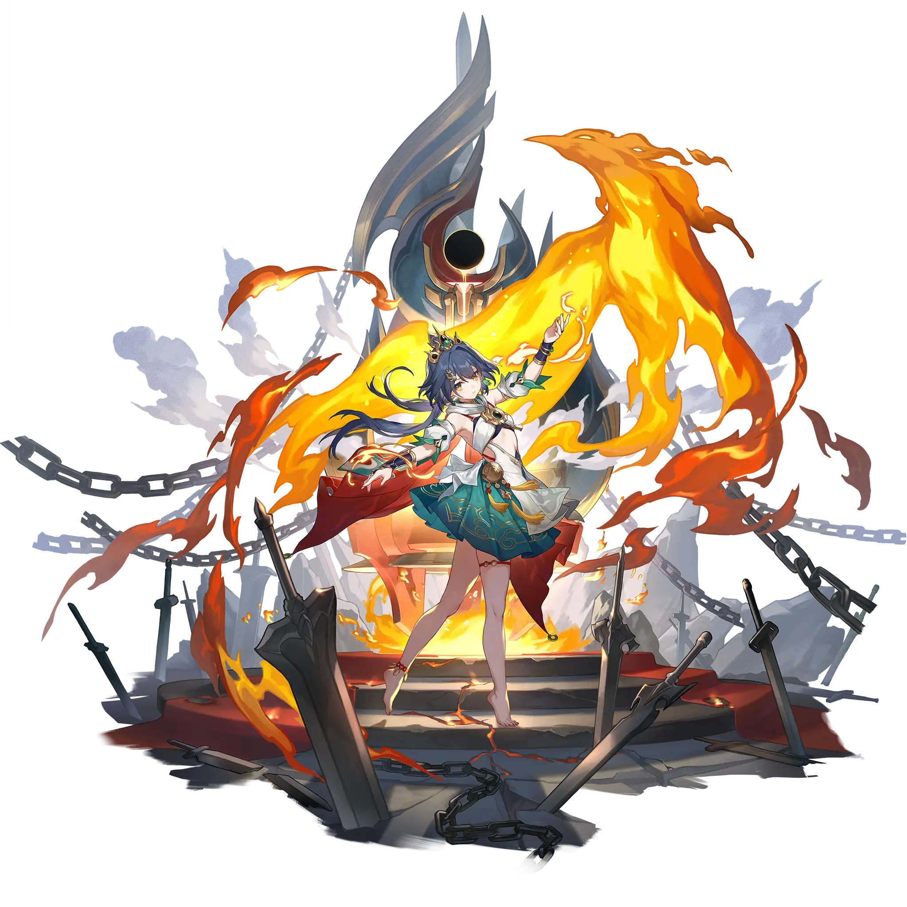

Yunli
Best Yunli build guide for Honkai Star Rail. See Yunli's best Relics, Light Cones, teams, Eidolons, Trace priority, and how to play Yunli.
🔍 Detail Skill
Semua skill aktif dan pasif beserta efeknya.
Deals Physical DMG equal to #1[i]% of Yunli's ATK to a single target enemy.
Restores HP equal to #1[i]% of Yunli's ATK plus #2[i]. Deals Physical DMG equal to #3[i]% of Yunli's ATK to a single target enemy and Physical DMG equal to #4[i]% of Yunli's ATK to adjacent targets.
When Yunli gets attacked by an enemy target, additionally regenerates 15 Energy and immediately launches a Counter on the attacker, dealing Physical DMG equal to #1[i]% of Yunli's ATK to the attacker and Physical DMG equal to #2[i]% of Yunli's ATK to adjacent targets. If there is no immediate target to Counter, then Counters a random enemy target instead.
This unit gains the Ward effect, lasting for 20 seconds. During this time, upon entering combat by either attacking enemies or receiving an attack, immediately casts 'Intuit: Cull' on a random enemy, and increases the DMG dealt by this attack by 80%.
⚔ Light Cone Terbaik
Diurutkan dari yang paling kuat. Persentase menunjukkan performa relatif terhadap pilihan terbaik.
💎 Relic Set Terbaik
Set terbaik untuk karakter ini, diurutkan berdasarkan prioritas.
📊 Stat Utama
Stat yang dicari pada tiap slot.
👥 Tim yang Direkomendasikan
Karakter yang sering dipasangkan bersama Yunli.
 Robin
Robin
 Tribbie
Tribbie
 Sunday
Sunday
 Tingyun
Tingyun
 Dan Heng • Permansor Terrae
Dan Heng • Permansor Terrae
 Huohuo
Huohuo
🔗 Lanjutkan
Build ini dirangkum dari Prydwen Institute. Starwise tidak menghitung sendiri. Angka bisa berubah setelah patch atau karakter baru rilis.